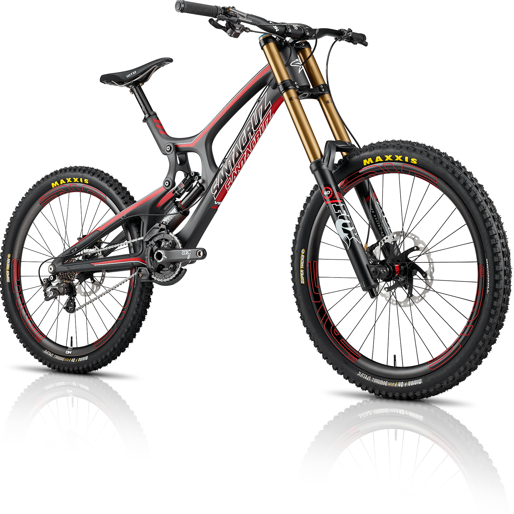
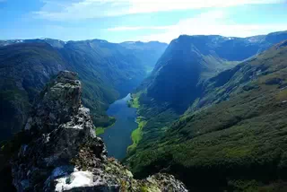
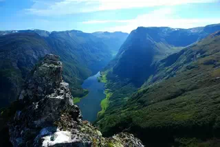

WebP
- WebP
-
Современный формат файлов изображений, который широко применяется для публикации графики в интернете.
Он был разработан компанией Google и предназначен для уменьшения размера файлов при сохранении их
высокого качества. Используются форматы сжатия как с потерями, так и без потерь. Проще говоря,
применение WebP вместо других форматов картинок может сделать сайт заметно легче и быстрее. Формат
поддерживается большинством современных веб-браузеров, включая Chrome (с версии 2), браузер Android
(с версии 4.0 (Ice Cream Sandwich)), Chrome для Android (с версии 25),
Firefox (с версии 65), Microsoft Edge (с версии 18, но теперь Edge основан на Chromium и поддерживает WebP)
и Opera (с версии 11), Safari (с 14 версии), Apple Safari (не имеет встроенной поддержки WebP, однако его
можно просматривать в Safari, используя плагин или конвертируя изображения в другой формат), Samsung
Internet
Browser (с версии 4.0).
Преимущества WebP
- Сохраняет прежнее качество при уменьшении размера файла. Сжатие с потерями приводит к уменьшению
размера файла в среднем на 30% по сравнению с JPEG, а сжатие без потерь — в среднем на 26% по
сравнению с PNG.
- WebP способен передавать до 16,7 миллионов цветов. Как и PNG, он поддерживает 24-битные цвета RGB
(красный, зеленый, синий), а также 32-битные цвета RGBA (красный, зеленый, синий, альфа, то есть
прозрачность).
- Умеет хранить анимированные изображения, что отличает его от JPEG и PNG.
- WebP обеспечивает хорошее качество при более низком размере файла.
- Веб-сайты со сжатыми изображениями WebP загружаются быстрее, поскольку на обработку файлов меньшего
размера уходит меньше времени. Даже если на сайте сотни изображений, сжатие позволяет сэкономить
время на длительной загрузке.
- Загружая изображения меньшего размера на сервер, вы экономите место на жестком диске.
- Пользователи будут использовать меньше мобильных данных при посещении веб-сайта со смартфона.
- Выделенный интернет-канал к серверу будет загружен меньше, если передаваемый медиаконтент будет меньшего
размера, что приведет к повышению производительности.
Недостатки WebP
- Не все браузеры поддерживают этот формат. Может быть такое, что вы откроете сайт и не увидите картинки,
так как они в формате WebP. Поддержка этого формата среди браузеров и веб-приложений постепенно
увеличивается. В настоящее время нет никаких проблем с WebP в Google Chrome, Opera, Firefox и
др.
- Файл WebP на ПК можно открыть только некоторыми программами. Например, вы вряд ли сможете посмотреть
такую картинку в стандартном приложении «Фотографии» на Windows. Даже Photoshop старых версий без
специального
плагина будет отказываться открывать WebP (их поддержка включена начиная только с версии 23.2). Это
создает проблемы как для обычных людей, так и для дизайнеров и вебмастеров.
- При сжатии с потерями изображение может выглядеть плоским, как будто «пластиковым». Это обусловлено
тем, какие параметры изображения ухудшаются при сжатии.
Примеры:
png(539Kb)
jpg(649Kb)
webp(393kb)
png(96.6Kb)
jpg(165Kb)
webp(81.5Kb)
png(127Kb)
 jpg(117Kb)
webp(83.7Kb)
jpg(117Kb)
webp(83.7Kb)
jpg(15.5Kb) webp(10.5Kb)
webp(10.5Kb)